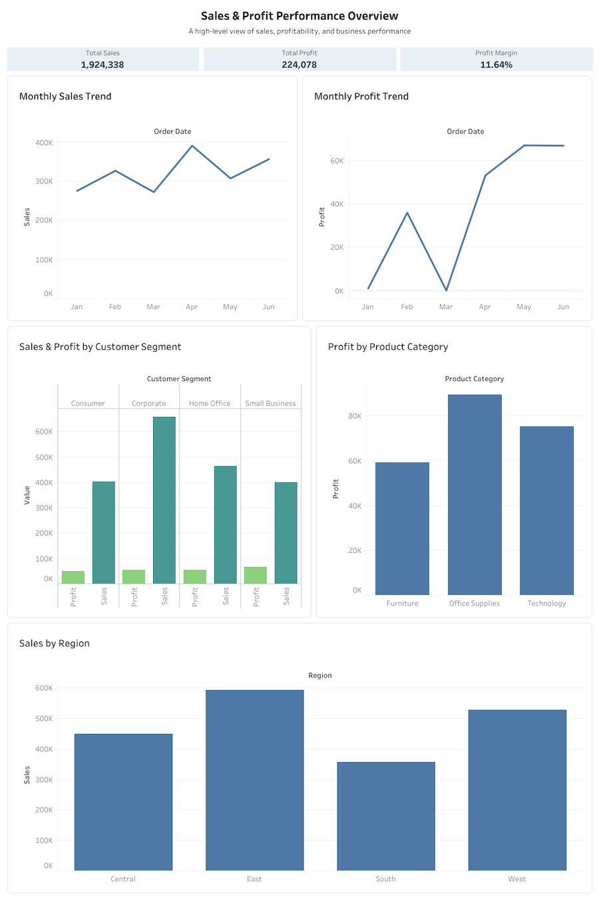
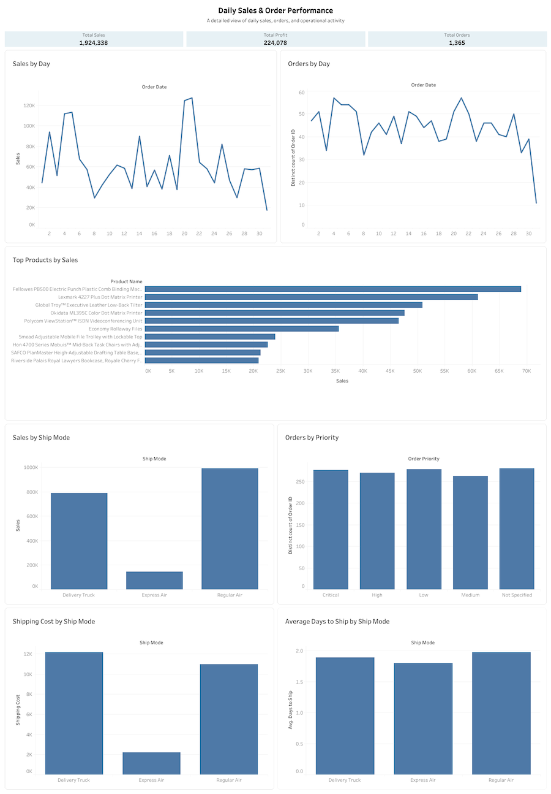

Försäljningsanalys & datavisualisering
Tableau · Datavisualisering · Dashboard · KPI
Om projektet
Jag arbetade med försäljningsdata i Tableau där samma datakälla skulle presenteras för två olika målgrupper. Syftet var att anpassa innehåll och visualisering efter vad respektive målgrupp behövde kunna se och följa upp.
Det resulterade i två dashboards med olika fokus och detaljnivå.
Två målgrupper, två perspektiv
Ledningsgruppen och det operativa teamet använder informationen på olika sätt. För ledningsgruppen är det viktigt att snabbt kunna få en bild av hur verksamheten utvecklas och se större mönster. Det operativa teamet arbetar närmare den dagliga verksamheten och behöver därför kunna följa mer detaljerade förändringar.
Utifrån detta anpassade jag vilken information som lyftes fram och hur den presenterades för de två målgrupperna.
Fokus på helheten
För ledningsgruppen valde jag att fokusera på information som ger en snabb bild av verksamhetens resultat och utveckling. Försäljning, vinst och vinstmarginal som KPI:er ger tillsammans en överblick över både omsättning och lönsamhet.
För att kunna se hur resultaten utvecklas över tid använde jag månadsvisa visualiseringar av försäljning och vinst. Jag inkluderade även kundsegment, produktkategorier och regioner för att göra det möjligt att se hur resultaten fördelar sig mellan olika delar av verksamheten. På så sätt kan större skillnader och mönster synliggöras utan att gå ner på detaljnivå för enskilda orders eller produkter.

Fokus på detaljerna
För det operativa teamet är det viktigt att kunna följa vad som händer i försäljning och orders från dag till dag. Därför valde jag att lyfta försäljning och antal orders över tid, tillsammans med information om vilka produkter som står för störst försäljning och hur orders fördelar sig mellan olika prioritetsnivåer.
Jag tog även med information om fraktsätt, eftersom det ger möjlighet att se hur försäljning och fraktkostnader fördelar sig samt hur lång tid det i genomsnitt tar från att en order läggs till att den skickas. På så sätt ger dashboarden en mer detaljerad bild av order- och fraktflödet.

Sammanfattning & lärdomar
Projektet gav mig erfarenhet av att anpassa datavisualisering efter olika målgruppers behov. Jag fick arbeta med att välja relevanta KPI, visualiseringar och informationsnivå utifrån vad målgruppen behöver kunna se.
En viktig lärdom var att bra datavisualisering inte bara handlar om att visa data, utan också om att välja vilken information som är relevant för den som ska ta del av den.